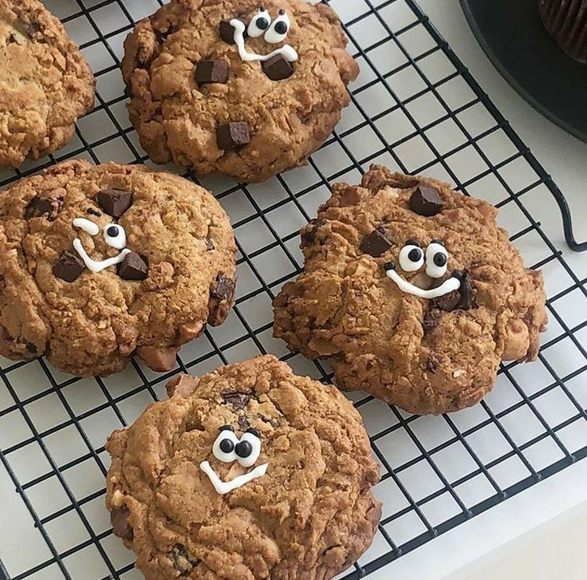

Recipe
Step-by-Step Recipe
쿠키반죽
1. 모든 재료는 차갑게 준비합니다. 견과류도 볶아서 차갑게 식혀준다.
2. 버터를 깍둑설기하고 설탕과 소금을 넣고 저속에서 고속으로 믹싱한다. 한 덩어리가 되면 바로 멈춘다.
3. 2에 계란과 바닐라빈 익스트랙을 넣고 고속으로 믹싱한다.
4. 3에 모든 체친 가루류를 넣고 주걱으로 대충 뭉친다.
5. 4에 초콜렛, 견과류를 넣고 날가루가 보이지 않을 정도까지만 섞는다.
마무리
1. 100g씩 동그랗게 팬닝하여 냉장고에서 최고 1시간, 하루 까지 휴지한다.
2. 반죽이 퍼짐을 예상하여 넓게 자리하고 예열된 오븐 180도에서 15분 구워준다( 오븐에따라 1-2분 더 구울수도있음)
3.다 구워진 쿠키는 말랑한 상태이므로 반드시 10분 정도 식힌 후 식힘망에서 완벽하게 식혀준다.
보관방법 및 주의사항
- 쿠키는 구운 당일에 먹는 것을 추천합니다.
- 오래 두고 먹고싶다면 냉동보관하는 것이 좋습니다.
- 밀봉하여 최대 5일까지 실온 및 냉장보관이 가능합니다.